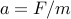
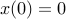
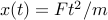
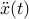
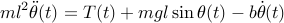
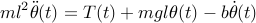

One of the most astonishing features of the Segway is that it maintains balance at all speeds, without any intervention of the driver. If you have ever tried to keep balance on an ordinary bike while standing still at at stop light, you know how hard this can be: you have to continously monitor your balance, and if the bike starts tipping over to one side you immediately have to act to create a counteracting force that returns the bike to equilibrium.
In order to automate this balancing act (so that we can have the embedded computer in the LegoNext kit do this for us) we are going to spend some time creating a model of how the Segway behaves. Arguably, the Segway is a very complex device, so building an accurate model of every aspect of it appears virtually impossible. We will thus focus on the balancing dynamics: how the force generated by the driving wheels and external factors influence the deviation from the upright position.
Analogies and abstractions: the Segway, balancing sticks and the inverted pendulum
Conceptually, the problem of maintaining balance of a Segway
is very similar to that of balancing a stick in your hand. The
mathematical object that describes this motion is called an inverted
pendulum.
The inverted pendulum is readily modelled and analyzed using high school physics and maths. Despite its simplicity, you will discover that the model gives a lot of insight into the system dynamics, and that it is sufficiently accurate for developing a balancing controller. Let’s move ahead!
A mathematical model of the inverted pendulum
The figure below shows the inverted pendulum abstraction that we will use from now on.
We have introduced  to describe the angular deviation from the
upright position, and assume that we can affect the pendulum by a
torque at its base. As illustrated in the figure, it is gravity
that forces the pendulum away from its upright equilibrium.
to describe the angular deviation from the
upright position, and assume that we can affect the pendulum by a
torque at its base. As illustrated in the figure, it is gravity
that forces the pendulum away from its upright equilibrium.
How can we go from this abstract view of the pendulum to mathematical
equations describing its dynamics? You certainly remember Newton’s
first law of motion

This equation states that a force
will generate an acceleration of . Thus, if we consider an
object starting at rest at position  and apply a constant
force , Newton’s law predicts that the object will be at position
 at time (just use the fact that the accelaration
equals  and integrate). We would like to do something similar for the pendulum.
Now, the motion of the pendulum is rotational rather than
translational, so we will have to use the following variation of Newton’s law

Here, is the moment of inertia, and  denotes the total momentum acting on the pendulum:
denotes the total momentum acting on the pendulum:
The first term is the (possibly time-varying) force
applied at the base, the second term is the influence of gravity,
while the last term describes a damping proprtional to the angular
velocity of the pendulum. The inertia of the pendulum depends on how
its mass is distributed. If we assume that the full mass is
located at the top of the pendulum, we have
We can now
combine these relations to a single one

The solution  to
this ordinary differential equation predicts the motion of the
pendulum. As it is often hard to find analytical expressions for
solutions to nonlinear differential equations, we will assume that the
deviation from upright position is small, so that
, and consider the linearized model
to
this ordinary differential equation predicts the motion of the
pendulum. As it is often hard to find analytical expressions for
solutions to nonlinear differential equations, we will assume that the
deviation from upright position is small, so that
, and consider the linearized model

Let’s proceed to see what this model predicts about the behaviour of our Segway vehicle [continue »].